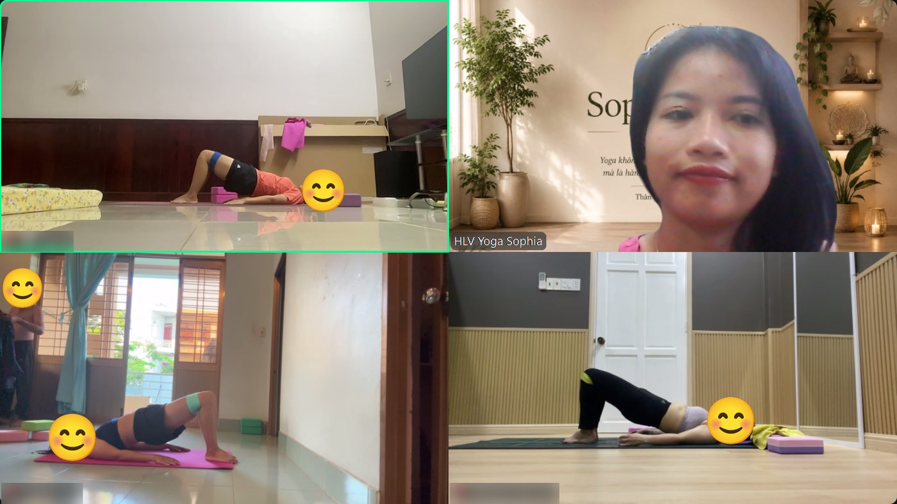
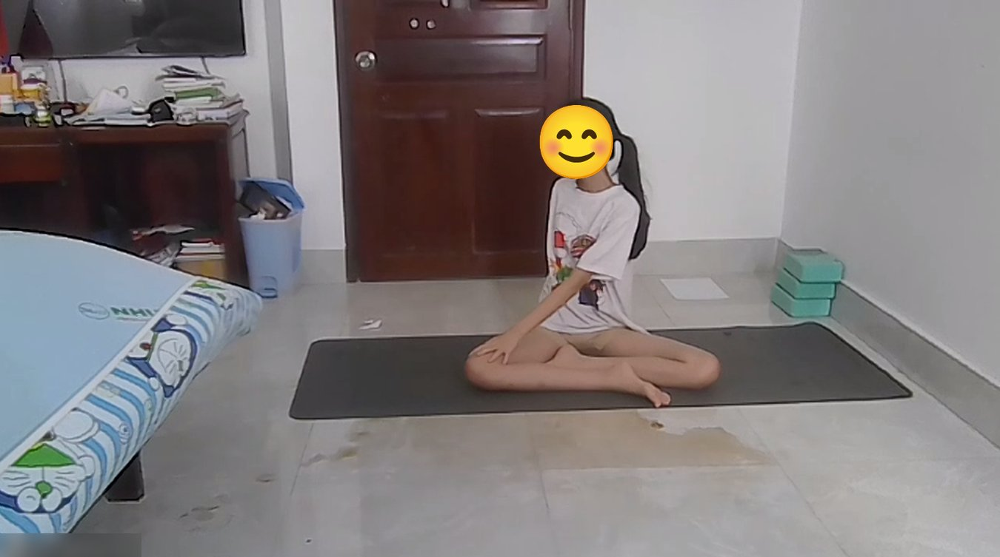

Yoga người lớn · Nỗi lo thời hiện đại
Ứng dụng yoga cân bằng phục hồi cho người hay nóng giận, dễ cáu
Lời đã nói ra rồi. Giọng đã to rồi. Cửa đã đóng sầm rồi. Rồi mười phút sau, mình ngồi một mình và thấy thương người kia, thương cả mình.
“Cô ơi, sáng nào em cũng quát con. Giục ăn, giục mặc, giục đi. Đưa con đến lớp xong em ngồi trong xe mà muốn khóc.”
Đó là lời một học viên nhắn cho cô sau một buổi tập tối. Bạn ấy không phải người xấu tính. Bạn ấy là một người mẹ ngủ năm tiếng mỗi đêm, làm việc tám tiếng mỗi ngày, và gánh rất nhiều thứ không ai nhìn thấy.
Cô không dạy bạn ấy cách “không bao giờ giận”. Cô không làm được, và cũng không ai làm được.
Cô chỉ chỉ cho bạn ấy cách thở ra trước khi nói.
Giận là một cảm xúc tự nhiên. Nó báo cho mình biết có điều gì đó không ổn: mình mệt, mình bị coi thường, mình sợ, hay mình đã chịu đựng quá lâu. Giận không có lỗi. Điều làm mình khổ là những gì mình làm khi đang giận.
Thời bây giờ, nhiều người dễ cáu hơn mà không biết vì sao. Ngủ ít. Việc nhiều. Kẹt xe. Tin nhắn công việc lúc mười giờ đêm. Đồng hồ trong người lúc nào cũng chạy nhanh. Bài này cùng nhìn lại cơn giận trên cả năm thể, với hơi thở, rèn tâm, giới luật yoga, và một chuỗi tư thế nhẹ để hạ nhiệt.

- Khi giận, thân mình ra sao
- Nhiệt kế cơn giận
- 90 giây
- Năm thể
- Giới luật
- Chuỗi hạ nhiệt
- Khi nào cần hỗ trợ
Khi giận, thân mình ra sao
Khi giận, cơ thể bật chế độ “chiến hay chạy”. Tim đập nhanh. Huyết áp lên. Cơ bắp căng. Hơi thở ngắn và nằm ở ngực. Máu dồn về tay chân để sẵn sàng hành động. Phần não lo suy nghĩ chín chắn tạm lùi lại phía sau, nhường chỗ cho phần não phản ứng nhanh.
Vì thế, khi đang giận mà cố “nghĩ cho thông” thường không được. Thân phải dịu trước, rồi đầu mới sáng ra.
Cơn giận và trái tim. Một tổng quan gộp nhiều nghiên cứu cho thấy trong khoảng hai giờ sau một cơn giận bùng nổ, nguy cơ nhồi máu cơ tim cao hơn rõ so với lúc bình thường, nhất là ở người đã có sẵn bệnh tim mạch (Mostofsky và cộng sự, European Heart Journal 2014). Một tổng quan khác thấy người hay giận dữ, thù địch có nguy cơ bệnh mạch vành cao hơn về lâu dài (Chida và Steptoe, 2009).
Xả giận có làm nhẹ lòng? Nhiều người tin là đấm gối, la hét cho “xả”. Nhà tâm lý học Brad Bushman cho người tham gia đấm bao cát trong khi nghĩ về người làm mình giận. Kết quả: họ còn giận và gây hấn hơn sau đó, so với nhóm ngồi yên không làm gì (Bushman, 2002). Cơn giận được nuôi bằng việc lặp lại nó.
Còn một điều ít ai để ý: thiếu ngủ. Nhóm của nhà khoa học giấc ngủ Matthew Walker cho người trẻ khỏe mạnh thức trắng một đêm, rồi cho xem hình ảnh tiêu cực. Vùng não phản ứng với cảm xúc (hạnh nhân) của họ phản ứng mạnh hơn khoảng 60% so với khi ngủ đủ (Yoo và cộng sự, 2007). Nhiều khi mình không xấu tính. Mình chỉ đang thiếu ngủ.
Nhiệt kế cơn giận
Cơn giận không bật lên từ số 0 đến số 10 trong một giây. Nó lên từng bậc. Người biết mình đang ở bậc nào thì dễ dừng hơn. Chạm vào con số giống với lúc này, hoặc lần gần nhất mình giận.
Chín mươi giây
Tiến sĩ thần kinh học Jill Bolte Taylor, trong cuốn My Stroke of Insight (2008), kể rằng làn sóng hóa chất của một cảm xúc như giận, nếu không được mình nuôi thêm bằng suy nghĩ, thường trào lên rồi rút xuống trong khoảng chín mươi giây. Đây là quan sát của bà, không phải con số đo chính xác cho mọi người. Nhưng cô thấy nó rất có ích ở lớp, vì nó cho mình một điều để làm: chờ chín mươi giây, và thở.
Thở ra dài hơn hít vào làm nhịp tim chậm lại, nhờ dây thần kinh phế vị. Đây là chỗ hơi thở chậm có nhiều bằng chứng nhất (Zaccaro và cộng sự, 2018). Bấm bắt đầu, rồi chỉ thở theo quả bóng: hít vào bốn nhịp, thở ra tám nhịp.
Hít vào 4 nhịp, thở ra 8 nhịp. Chưa nói gì cả. Chỉ thở.
Sau chín mươi giây, có một việc nhỏ nữa: gọi tên cảm xúc. “Mình đang giận.” “Mình đang thấy bị coi thường.” “Mình đang mệt quá.” Nghe đơn giản, nhưng nhóm nghiên cứu ở Đại học California, Los Angeles thấy chỉ việc gọi tên cảm xúc bằng lời đã làm vùng hạnh nhân dịu xuống (Lieberman và cộng sự, 2007).
Rồi mới nói. Nói chậm hơn. Nói thấp giọng hơn. Nói về điều mình cần, thay vì điều người kia sai.
Nhìn cơn giận trên cả năm thể
Thân
Ngủ đủ. Ăn đúng bữa, vì đói cũng làm mình dễ cáu. Bớt cà phê buổi chiều, bớt rượu. Vận động để thân xả căng mỗi ngày.
Khí
Thở ra dài. Thở làm mát Sitali những ngày nóng trong người. Thở trước khi trả lời tin nhắn làm mình bực.
Tâm
Nhận ra cơn giận khi nó còn nhỏ. Gọi tên nó. Ôm nó như ôm một đứa trẻ đang khóc, không đẩy đi, không nghe theo.
Trí
Nhìn lại câu chuyện mình kể trong đầu. “Nó cố tình làm thế” có khi chỉ là “nó cũng đang mệt”.
Tinh thần
Nhớ mình muốn trở thành người như thế nào. Mình muốn con nhớ về mình bằng giọng nói nào.
Thiền sư Thích Nhất Hạnh, trong cuốn Giận (2001), viết rằng khi giận, mình hãy quay về chăm sóc cơn giận của mình, như người mẹ ôm đứa con đang khóc. Không đàn áp nó, cũng không để nó cầm lái. Câu này cô đọc đi đọc lại nhiều lần, và mỗi lần lại thấy nhẹ đi một chút.
Những ngày nóng trong người, có thể tập thêm thở làm mát Sitali. Những ngày căng thẳng kéo dài, bài Ứng dụng yoga cân bằng phục hồi cho người hay căng thẳng, lo âu có nhiều cách hơn. Và nếu dễ cáu vì ngủ không ngon, hãy bắt đầu từ giấc ngủ.
Giới luật: sống hiền hơn mỗi ngày
Nhánh đầu tiên trong tám nhánh yoga không phải tư thế, cũng không phải hơi thở. Đó là Yama, những giới về cách mình đối xử với người khác và với chính mình. Với cơn giận, cô thấy bốn điều này gần gũi nhất.
Ahimsa, không làm hại. Không chỉ là không đánh ai. Còn là không nói lời làm tổn thương, không dằn mặt, không im lặng để trừng phạt. Và không làm hại chính mình bằng việc tự trách sau mỗi lần lỡ lời.
Satya, nói thật mà hiền. Không phải nuốt giận vào trong. Mình vẫn nói điều mình không đồng ý. Nhưng chọn lúc, chọn lời, để sự thật đi cùng sự tử tế.
Santosha, biết đủ. Rất nhiều cơn giận đến từ việc mọi thứ không như mình muốn. Con không ngoan như mình muốn. Chồng không hiểu như mình muốn. Biết đủ là chấp nhận hôm nay như nó đang là, rồi mới thay đổi từ đó.
Svadhyaya, tự quan sát. Sau mỗi lần giận, hỏi mình: lúc đó mình đang mệt không, đói không, sợ điều gì? Hiểu cơn giận của mình là cách để nó bớt bất ngờ lần sau.
Giới luật trong yoga không phải điều cấm để mình thấy tội lỗi. Nó là hướng đi. Hôm nay đi được một bước, mai đi thêm bước nữa. Mục Giới và luật trong yoga có các bài kể về giới luật trong hôn nhân, công việc và nuôi con.
Chuỗi 10 phút hạ nhiệt
Chuỗi này không dành cho lúc đang nổi giận, vì lúc đó chỉ cần thở. Nó dành cho buổi tối, sau một ngày nhiều va chạm, để thân xả hết những gì đã gồng lên. Tập chậm, không ép, thở ra dài trong mọi tư thế.
Đứng vững, thở ra bằng miệng
Tadasana 1 phút
Hai bàn chân bám sàn. Hít vào bằng mũi, thở ra bằng miệng như thổi nguội bát cháo. Năm lần.
Gập người, thả đầu
Uttanasana với gạch 1 phút
Gối chùng, hai tay đặt trên gạch. Đầu và cổ buông thõng. Lắc nhẹ đầu như nói “không sao”.
Cúi người về trước
Tư thế cún con, Uttana Shishosana 2 phút
Quỳ, đẩy hai tay ra xa trên gạch, ngực hạ thấp như trong ảnh. Trán chạm gạch hay chạm sàn. Lưng dài, vai thả.
Nâng hông
Setu Bandhasana 1 phút
Nằm ngửa, gập gối, nâng hông lên khi hít vào, hạ xuống khi thở ra. Chậm theo hơi thở. Có thể đặt gạch dưới xương cùng để nghỉ trên đó.
Nằm mở ngực trên gạch
Supta Baddha Konasana có hỗ trợ 3 phút
Gạch dưới lưng và đầu, hai lòng bàn chân chạm nhau, gối mở sang bên. Một tay đặt lên tim. Cảm nhận tim chậm lại.
Nằm yên
Savasana 2 phút
Thả hết. Hỏi mình một câu nhẹ: hôm nay mình đã cố gắng nhiều thế nào? Cảm ơn mình vì điều đó.


Người có huyết áp cao, đau lưng, hay đang mang thai thì điều chỉnh nhẹ hơn: không giữ lâu khi gập người, không nín thở. Bài Ứng dụng yoga cân bằng phục hồi cho người huyết áp cao có thêm lưu ý.

Khi nào cần tìm hỗ trợ
Gọi cấp cứu 115 ngay khi trong hoặc sau cơn giận thấy đau, thắt, đè nặng ngực, khó thở, vã mồ hôi, hoặc yếu tê một bên người, méo miệng, nói khó.
Nên gặp bác sĩ hoặc chuyên gia tâm lý khi:
- Cơn giận dẫn đến đập phá, đánh người, hoặc mình sợ mình sẽ làm hại ai đó, kể cả chính mình.
- Giận dữ thường xuyên ảnh hưởng đến công việc, hôn nhân, việc nuôi con, và mình không tự dừng được.
- Tính khí thay đổi đột ngột so với trước, kèm hồi hộp, sụt cân, run tay, mất ngủ (có thể liên quan tuyến giáp hay nội tiết), hoặc kèm buồn bã kéo dài, mất hứng thú (có thể là trầm cảm).
- Dễ cáu gắt rõ rệt quanh kỳ kinh nguyệt hay tuổi tiền mãn kinh, đến mức ảnh hưởng cuộc sống. Bài Ứng dụng yoga cân bằng phục hồi cho tuổi mãn kinh có kể thêm.
- Dùng rượu bia, chất kích thích để “cho bớt bực”.
Nếu có trẻ em bị bạo lực hoặc có nguy cơ bị bạo lực, gọi Tổng đài quốc gia bảo vệ trẻ em 111 (miễn phí).
Lời nhỏ cuối bài
Bạn học viên ở đầu bài, sau vài tháng, nhắn lại cho cô. Bạn ấy vẫn có những buổi sáng to tiếng. Nhưng ít hơn. Và có một buổi sáng, khi định quát, bạn ấy ngồi xuống ngang tầm con, thở ra một hơi dài. Con nhìn mẹ rồi bảo: “Mẹ đang thở như cô Sophia đấy à?”
Hai mẹ con cùng cười.
Cô nghĩ, mình không cần trở thành người không bao giờ giận. Chỉ cần trở thành người biết thở ra trước khi nói.
🌊 Muốn có người cùng tập để thân nhẹ, tâm dịu hơn?
Sophia Yoga có lớp người lớn trực tiếp, lớp Zoom và lớp kèm 1 kèm 1, chú trọng hơi thở, thư giãn và cách sống yoga trong gia đình. Ai muốn mang sự bình an này đến với các con, có khóa đào tạo HLV Yoga trẻ em.
Tài liệu tham khảo
- Mostofsky E., Penner E.A., Mittleman M.A. (2014). Outbursts of anger as a trigger of acute cardiovascular events: a systematic review and meta-analysis. European Heart Journal, 35(21), 1404–1410.
- Chida Y., Steptoe A. (2009). The association of anger and hostility with future coronary heart disease: a meta-analytic review of prospective evidence. Journal of the American College of Cardiology, 53(11), 936–946.
- Bushman B.J. (2002). Does venting anger feed or extinguish the flame? Catharsis, rumination, distraction, anger, and aggressive responding. Personality and Social Psychology Bulletin, 28(6), 724–731.
- Yoo S.S., Gujar N., Hu P., Jolesz F.A., Walker M.P. (2007). The human emotional brain without sleep: a prefrontal amygdala disconnect. Current Biology, 17(20), R877–R878.
- Lieberman M.D. và cộng sự (2007). Putting feelings into words: affect labeling disrupts amygdala activity in response to affective stimuli. Psychological Science, 18(5), 421–428.
- Zaccaro A. và cộng sự (2018). How breath-control can change your life: a systematic review on psycho-physiological correlates of slow breathing. Frontiers in Human Neuroscience, 12, 353.
- Bolte Taylor J. (2008). My Stroke of Insight: A Brain Scientist's Personal Journey. Viking.
- Thích Nhất Hạnh (2001). Anger: Wisdom for Cooling the Flames (bản tiếng Việt: Giận). Riverhead Books.
- Patañjali. Yoga Sutra, chương II (Yama và Niyama, II.30–32).
Ảnh trong bài là ảnh thật từ các buổi tập của Sophia Yoga, mặt học viên đã được che và tên trên Zoom đã được làm mờ. Câu chuyện trong bài là điều cô gặp ở lớp, không nêu tên học viên. Bài viết chia sẻ kiến thức và kinh nghiệm tập luyện, không thay cho lời khuyên và điều trị của bác sĩ, chuyên gia tâm lý.